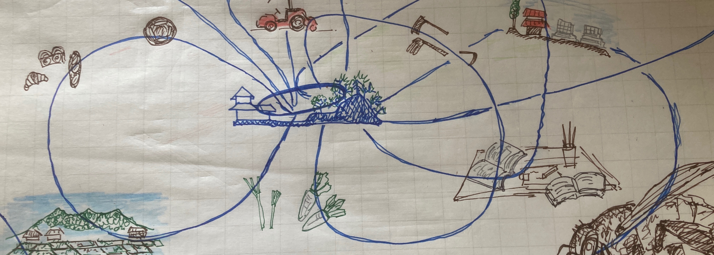

回遊-Migration-
「いい言葉だなぁ〜」って思っていて、回るということは戻ることでもある。自分の現場に戻り、また何処かへ行って、また戻る。そして楽しみながらゆうゆうと遊び、その楽しみを運ぶ。
どこかへ行く、見る、どこかへ学びに行く、本を読む、、、、、それを持ち帰る繰り返し。その様子をまとめました。よくわからないが、ミツバチの様に動きたいのかもしれない！
回遊-Migration-NO.1 2020/09/13/sat(曇) 読書「没入」で捏ねると耕すがつながったかも
本 「グラウンド・ツアー 泥モノ」著者：藤森照信 発行：編集出版組織体アセテート アセテートさんの本は難しいんだけど、何か読まなくてはいけないような気がいつもする。
本書の「没入」の内容的には、泥の建築を作る時に泥を塗って行くのだが、次第に作り手が無口になるらしい。作り手の意識は手を伝って泥の壁に入って行くのだ。このことを没入すると言っていた。パンも捏ねていると
意識は手を伝って生地に行く。畑でも鍬（クワ）やトラクターを伝って意識が土に伝わって行く。